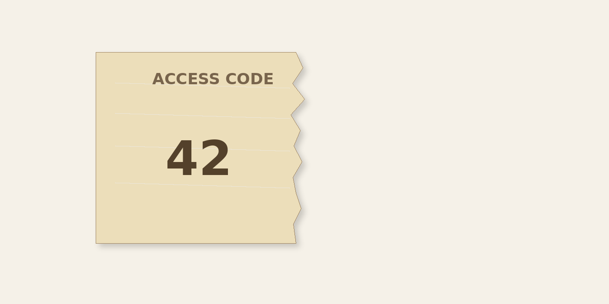
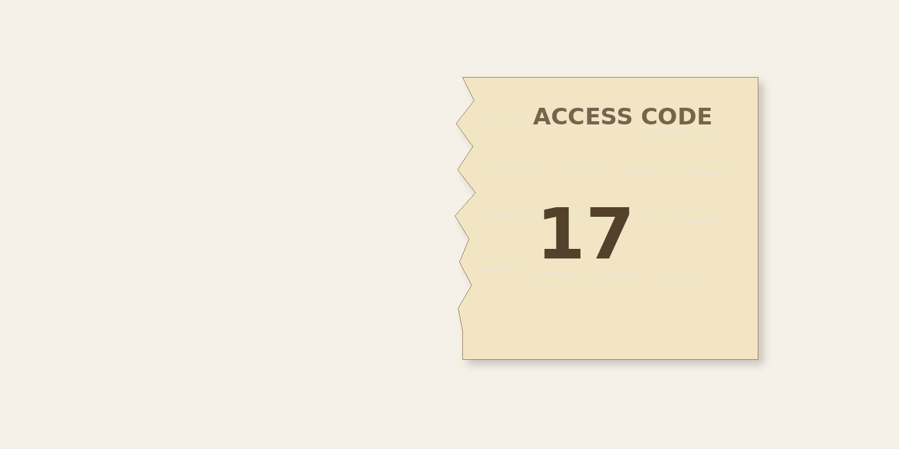

Available
Room 1: The Hall of Prostate Pathology
Differentiate BPH medication mechanisms, onset of action, and adverse effect profiles.
After hours at the National Museum of Medical History, the automated security lockdown triggers, trapping you inside the newly curated Men’s Health & Urological Therapeutics wing. Investigate the open galleries, piece together the torn ledger fragments, unlock the Chief Apothecary’s Vault, and restore exit access before time or life points run out.
Select Room 1 or Room 2 to begin in either order. Complete both rooms to reconstruct the document and unlock Room 3.
Differentiate BPH medication mechanisms, onset of action, and adverse effect profiles.
Identify contraindications, drug interactions, and counseling parameters for ED therapy.
Integrate clinical decision-making for concurrent BPH and ED management.
Collect Fragment 1 (Room 1) and Fragment 2 (Room 2) to reconstruct the torn document.
Moonlight filters through the skylights onto antique glass jars and brass urological instruments. A locked display case housing a wax anatomical model hums softly, displaying an interactive clinical tablet left behind by the museum curator.
Learning Objective: Differentiate pharmacologic mechanisms, onset of action, and adverse effect profiles in the management of Benign Prostatic Hyperplasia (BPH).
Match each BPH medication class/agent to its primary mechanism of action or key clinical counseling point.
A 68-year-old man with moderate-to-severe lower urinary tract symptoms (LUTS) and a prostate volume of 45 mL is initiated on combination therapy with dutasteride and doxazosin. Which of the following counseling points are clinically appropriate? (Select all that apply.)

Heavy velvet curtains part to reveal an exhibit dedicated to vascular physiology and historical remedies. A brass pneumatic tube canister rests on a pedestal—solving the clinical triage cases on the exhibit terminal will depressurize the canister and release the second ledger fragment.
Learning Objective: Identify absolute contraindications, drug-drug interactions, and patient counseling parameters for Erectile Dysfunction (ED) pharmacotherapy.
Complete the clinical screening protocol for PDE-5 inhibitor therapy by selecting the correct option for each blank.
should take it at least 60 minutes before sexual activity on an empty stomach, as high-fat meals significantly delay its absorption.
A 59-year-old man with type 2 diabetes, hypertension, and ED asks about taking sildenafil 50 mg. His current medications include metformin, lisinopril, atorvastatin, and isosorbide mononitrate. Which recommendation should the pharmacist provide?

The heavy steel vault door clicks open, revealing the museum’s main security console bathed in amber emergency light. A complex patient case file sits open beside the exit override switch—resolving this integrated clinical scenario is the final step to unlock the museum doors.
Learning Objective: Integrate clinical decision-making to manage a patient presenting concurrently with BPH and ED, including therapy selection, titration, and safety monitoring.
A 64-year-old man presents with bothersome BPH symptoms (IPSS score: 18, prostate volume: 28 mL) and concurrent ED. Arrange the pharmacist’s clinical management steps in the most logical chronological order from initial assessment to follow-up.
During follow-up, the patient from Question 3.1 asks how many hours he would need to wait before receiving emergency nitroglycerin if he had taken tadalafil instead of sildenafil. Enter the numeric value only (in hours).